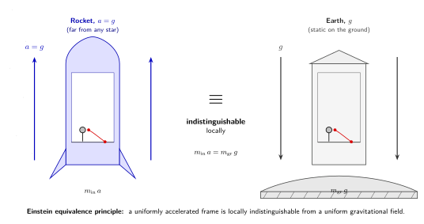

引力为什么不是一种力?
跳过过山车最高的那个点, 系着安全带的人会有几秒钟"没有重量"的奇异感: 口袋里的零钱浮起来, 头发飘起来, 胃里的东西也飘起来. 这种"失重"并不是因为引力消失了 —— 此刻地球仍然在以 $g \approx 9.8\,\text{m/s}^2$ 把你往下拉 —— 而是因为你和你坐的车厢一起在做自由落体, 没有任何东西把你"撑住", 所以你的脚底没有压力, 你的胃没有被椅子向上托住的感觉.
把这件事推到极端就是国际空间站. 宇航员在轨道上漂浮, 不是因为那里没有引力 —— 在 400 公里高的轨道上, 地表引力只衰减大约 11%, 还剩下大约 $8.7\,\text{m/s}^2$ —— 而是因为整个空间站连同它内部的一切物件正在一起朝着地心做自由落体, 只不过它们同时还有横向的轨道速度, 所以"落"成了绕地圆周运动. 在空间站参考系里, 引力消失了: 把一颗螺丝随手一推, 它就匀速直线飞过去, 看上去仿佛 Newton 第一定律刚刚换了个简化版本.
这件事之所以惊人, 不是因为它反直觉, 而是因为它太自然了 —— 自然到我们差点错过一个革命性的洞见. Einstein 1907 年坐在 Bern 的专利局里, 翻译别人的电报机专利申请之余, 突然想到: 如果一个人从屋顶跳下来, 他在自由下落的那短短几秒里"是没有重量的". Einstein 后来回忆说, 这是他"一生中最幸福的想法". 这个想法之所以幸福, 是因为它直接告诉他: 引力不是一种和电磁力、强力、弱力并列的"基本相互作用", 而是某种可以通过换参考系就消除掉的东西. 一种真正的力不会因为你换坐标系就消失, 摩擦力不会, 电磁力不会, 但引力可以 —— 自由落体参考系里, 引力当场归零.
这一节就把这件事从直觉变成定理. 我们要证明: "引力可以局部消除"这件事, 数学上等价于"惯性质量与引力质量相等"这一被实验反复验证的事实, 而这一事实本身, 又强迫我们重新思考"什么是引力". 答案的轮廓将在这一节末尾浮现 —— 引力是时空几何, 而不是一种力. 接下来的 29 节, 都是把这一句话掰开了揉碎了讲清楚.
一、弱等效原理: $m_{\rm in} = m_{\rm gr}$ 的奇怪巧合
让我们先把 Newton 力学里关于引力的两条公式并排写下来. 一条是 Newton 第二定律, 它描述物体的"惯性" —— 一个物体抵抗加速度的能力:
$$ \mathbf F = m_{\rm in}\,\mathbf a. \tag{1} $$
这里的 $m_{\rm in}$ 叫做"惯性质量". 它衡量的是: 你给一个物体施加一定的力, 它会被加速多少. 公式 (1) 中的力 $\mathbf F$ 可以是任何力 —— 弹簧的拉力, 摩擦力, 静电力, 任何东西.
另一条公式是 Newton 万有引力定律, 它描述地球这样的天体对一个测试物体的引力作用:
$$ \mathbf F_{\rm gr} = m_{\rm gr}\,\mathbf g. \tag{2} $$
这里的 $\mathbf g$ 是地球在该位置造成的引力加速度场, 而 $m_{\rm gr}$ 叫做"引力质量" —— 它衡量的是: 同一引力场对这个物体的"耦合强度". 在 Newton 的图像里, $m_{\rm gr}$ 是物体的"引力荷", 就像电荷之于电磁力一样, 它和惯性 ($m_{\rm in}$) 在原则上是两码事.
但奇迹在这里. 把 (2) 式代回到 (1) 式 ($\mathbf F = \mathbf F_{\rm gr}$, 假设没有别的力), 得到
$$ m_{\rm in}\,\mathbf a = m_{\rm gr}\,\mathbf g \quad\Rightarrow\quad \mathbf a = \frac{m_{\rm gr}}{m_{\rm in}}\,\mathbf g. \tag{3} $$
实验上, 从 Galileo 1589 年 (传说中的) Pisa 斜塔抛球, 到 Newton 用单摆做的细致测量, 到 Eötvös 1908 年的扭秤实验, 再到今天 MICROSCOPE 卫星上的精密测量, 大家反复发现: 不论物体的成分是什么 —— 木头、铜、铅、铀、铝合金、铂铑合金 —— 它们在同一引力场里的加速度 $\mathbf a$ 完全一样. 也就是说, 比值 $m_{\rm gr}/m_{\rm in}$ 对任何物体都相同, 取适当单位可以让它就等于 1:
$$ m_{\rm in} = m_{\rm gr}. $$
这就是"弱等效原理" (Weak Equivalence Principle, WEP). 它在 Newton 力学里是一条经验事实, 一个看似"巧合"的事实. 巧到什么程度? 现代版 Eötvös 实验把不同材料 (比如铂和钛) 做成扭秤的两端, 如果 $m_{\rm gr}/m_{\rm in}$ 在两种材料间略有差异, 太阳的引力就会在扭秤上产生一个昼夜变化的扭矩. MICROSCOPE 卫星 2017 年的最终结果是
$$ \frac{|\Delta a|}{a} \lesssim 10^{-14}\sim 10^{-15}, $$
地面 Eöt-Wash 实验早期工作的精度也已经达到了 $\lesssim 10^{-13}$ 的水平. 这是物理学里被检验得最精确的"巧合"之一 —— 比电荷守恒的检验精度还要高.
问题来了: 为什么 $m_{\rm in}$ 和 $m_{\rm gr}$ 在 Newton 力学里是两个独立量, 但实验上它们精确地相等? 这就好比问: 为什么"电荷"和"质量"恰好成比例? Newton 没有答案. 但 Einstein 给出了答案: 它们之所以相等, 是因为引力根本不是 (1)–(2) 式那种"力", 而是一种几何效应 —— 几何效应当然不分材料, 一视同仁.
二、Einstein 的电梯: 局部不可分辨
Einstein 1907 年那个"最幸福的想法"的具体形式, 后来被反复阐述为一组思想实验, 通常被称为"Einstein 电梯". 它有两个对称的版本.
版本 A. 想象你在远离任何星体的太空里, 关在一个不透光的盒子 (电梯) 内. 这个盒子的外面挂着一具发动机, 它把电梯沿某个方向以恒定加速度 $a = 9.8\,\text{m/s}^2$ 向"上"加速. 在电梯里你站在地板上, 脚底感到压力, 仿佛被一种力按在地板上; 把一颗球放手, 球向"下"加速 $9.8\,\text{m/s}^2$ 落到地板上 —— 当然, 在电梯外面看, 是地板向上加速来撞上那颗球, 而球本身保持原速漂浮.
版本 B. 现在把同一个不透光的盒子搬到地球表面, 静止地放在地上. 你站在地板上, 脚底感到压力, 重力把你向下按; 把一颗球放手, 球以 $g = 9.8\,\text{m/s}^2$ 向下加速落到地板上.
Einstein 的"等效原理" (Einstein Equivalence Principle, EEP) 就是这样一句陈述: 在足够小的时空区域内, 上述两个场景的物理是不可分辨的. 也就是说, 不论你在电梯里做什么实验 —— 抛球、点光、看摆钟、做化学反应、做粒子物理实验 —— 你都得到完全相同的结果. 你没有任何办法仅凭电梯内部的实验, 区分自己是在加速火箭里还是在地球引力场里.

这条原理的深层含义是: 在 (1)–(3) 式背后那个被反复实验确认的 $m_{\rm in} = m_{\rm gr}$, 现在不再被解释为"巧合", 而是被解释为"加速参考系和引力场是同一件事的两面". 引力场 $\mathbf g$ 不再是某种作用在物体上的"力", 而是某种由参考系本身带来的"伪力" —— 类似你坐在加速汽车里被椅背向前推的那种"力", 数学上叫做惯性力. 既然是参考系带来的, 那么它当然和物体的成分无关 —— 这就解释了为什么 $m_{\rm gr}/m_{\rm in}$ 对所有物质都精确相等.
反过来用. 既然加速参考系等价于引力场, 那么"加速参考系"内做的任何实验结果 —— 比如光线在加速火箭里看上去会弯曲, 因为火箭在光横穿盒子的瞬间又向上动了一点 —— 都必须在地球引力场里以相同形式发生. Einstein 由此预言: 光在引力场里也会弯曲. 这一预言在 1919 年 Eddington 的日食观测中得到验证, 让 Einstein 一夜成名.
三、"局部"两个字有多重要
等效原理里有一个不能忽略的限定语: "局部". 这两个字承担了等效原理整个数学结构. 让我们来看看为什么.
地球引力场不是均匀的. 取地心连线方向为 $\hat r$, 地表引力大小是
$$ g(r) = \frac{GM_\oplus}{r^2}, $$
当 $r$ 从地表的 $R_\oplus = 6371\,\text{km}$ 增大到稍高一点的 $R_\oplus + h$ 时, $g$ 会减小, 减小的相对幅度近似为 $\Delta g/g \approx -2h/R_\oplus$. 同时引力方向是径向汇聚的: 在地表上同时放两个相距 $d$ 的小球, 它们各自指向地心的"引力方向"略有夹角 $\theta \sim d/R_\oplus$.
这两个偏差就是所谓"潮汐效应". 一个体积有限的下落实验室里, 这些潮汐效应不能消除 —— 上下两端的"局部 $g$"略有不同, 左右两端的"$g$ 方向"略有不同. 取一个 1 米高 1 米宽的电梯, 头脚之间的引力差大约是
$$ \Delta g \approx -2 g\,\frac{1\,\text{m}}{R_\oplus} = -2\cdot 9.8\,\text{m/s}^2 \cdot \frac{1}{6.37\times 10^6} \approx -3\times 10^{-6}\,\text{m/s}^2, $$
而左右两端引力夹角约 $1/6.37\times 10^6\approx 1.6\times 10^{-7}\,\text{rad}$. 这两个数字小得在普通实验里测不到, 但它们原则上把"加速火箭"和"地球电梯"区分开来 —— 加速火箭里的"伪引力"是处处均匀的, 而地球电梯里的"真引力"是径向汇聚的.
所以等效原理只在"足够小"的时空盒子里成立 —— 小到潮汐效应被淹没在你测量精度里. 数学上的精确表述是: 在任何给定时空点 $p$, 总可以找到一个"局部惯性参考系", 在这个参考系中引力场在 $p$ 点处归零, 并在 $p$ 周围一阶展开里也归零 (这是黎曼流形上"测地正规坐标系"存在性的物理版本); 但二阶导数 —— 也就是潮汐项 —— 是不能归零的, 它们由黎曼曲率张量编码.
这一点对全书后面所有内容至关重要. 它告诉我们: 引力不能完全归约为"换参考系", 它的真实身份是时空的曲率. 平直时空里 (Riemann 曲率张量为零), 引力可以全局消除 —— 这就是狭义相对论的世界. 弯曲时空里 (Riemann 张量非零), 引力只能局部消除, 不能整体消除 —— 这就是广义相对论的世界. 潮汐效应就是曲率的"显影剂".
四、从"力"到"几何": 引力的真正身份
让我们把这一节累积起来的几条线索综合起来, 一举导出本卷的总纲.
第一条线索: 弱等效原理告诉我们 $m_{\rm in} = m_{\rm gr}$ 精确成立, 精度优于 $10^{-13}$. 这意味着在引力场中所有物体的加速度只取决于它们的位置和初速度, 与它们是什么材料无关.
第二条线索: 自由下落的局部参考系里引力消失, 物体保持惯性运动 —— 也就是"匀速直线". 但这种"直线"只在足够小的时空盒子里成立. 把许多这样的"局部直线"接在一起, 就构成了一条曲线 —— 在弯曲的时空里, 它叫做"测地线".
第三条线索: 引力效应不能在大尺度上消除, 因为潮汐效应永远在那里. 这告诉我们引力的真正自由度不是 $\mathbf g(r)$, 而是某种描述时空本身曲率的对象 —— 我们将在后面的几节里逐步引入它, 它叫做度规张量 $g_{\mu\nu}$ 与黎曼曲率张量 $R^\mu{}_{\nu\rho\sigma}$.
把三条线索拼起来: 引力不应该被写成 $\mathbf F = m\mathbf g$, 而应该被写成 "物体在弯曲时空里沿测地线运动". 这就是广义相对论给出的引力图像 —— 引力不是力, 引力是几何.
这个图像有一个直接的好处: 它自动解释了为什么 $m_{\rm in} = m_{\rm gr}$. 因为在测地线方程里, 物体的质量根本不出现 —— 测地线只取决于时空几何和初始条件, 不取决于物体本身的属性. 不同材料的物体之所以在同一引力场里加速度相同, 不是因为某种"巧合", 而是因为它们沿的是同一条测地线, 测地线对所有物体都是同一条.
历史上把这条思路完整推到底的, 是 Einstein 从 1907 年那个"最幸福的想法"出发, 用了整整八年. 中间他经历了几个关键节点: 1911 年他用纯等效原理论证了引力红移 (我们下一节就讲这个); 1912 年他和数学家 Marcel Grossmann 在苏黎世联合工作, 学会了 Riemann 几何这套语言; 1913 年发布了所谓"Entwurf 理论", 但很快发现它对水星近日点进动给出了错误答案 (43"/世纪没有出现); 1915 年 11 月他在柏林普鲁士科学院连开四次报告, 最终给出场方程 $G_{\mu\nu} = 8\pi G T_{\mu\nu}/c^4$, 算出水星进动正好 $43''$ 一世纪. 这一刻, 引力的"力"图像被几何图像彻底替换. Einstein 在给朋友 Besso 的信里写道: "想象之中的最大幸福."
这一节交代的是这场革命的起点. 我们让自由下落的人感觉不到自己的重量, 这件每个孩子都体验过的小事, 经过 Einstein 之手变成了"引力可以局部消除"; "局部消除"这件事再被推到极致, 就要求引力的真正身份不再是力, 而是时空几何. 接下来的 29 节, 我们将沿着 Einstein 当年的足迹一步步走完这条路: 引力红移, 时空度规, 测地线, Schwarzschild 黑洞, GW150914, 宇宙学原理, 大爆炸, ... 最终回到一些更深的问题: 信息悖论、量子引力. 而所有这些, 都从 1907 年专利局二楼那个职员"假如人从屋顶掉下来" 的恍惚一念开始.
小结
本节从"自由下落的人感觉不到自己的重量"这一日常事实出发, 一路推到广义相对论的核心信念: 引力不是一种力, 而是时空几何. 路径上经过三个台阶 —— 弱等效原理 ($m_{\rm in} = m_{\rm gr}$, 实验精度 $\lesssim 10^{-13}$); Einstein 等效原理 (局部加速参考系不可分辨于均匀引力场); 局部性的极限 (潮汐效应阻止引力被全局消除, 留下的就是时空曲率). 这三条结合起来, 强迫我们抛弃 $\mathbf F = m \mathbf g$ 这一图像, 转而把引力理解为弯曲时空里测地线运动. 下一节我们就从这条原理出发, 用最少的数学工具, 推出广义相对论第一个具体可观测后果 —— 引力时间膨胀与引力红移.
▲